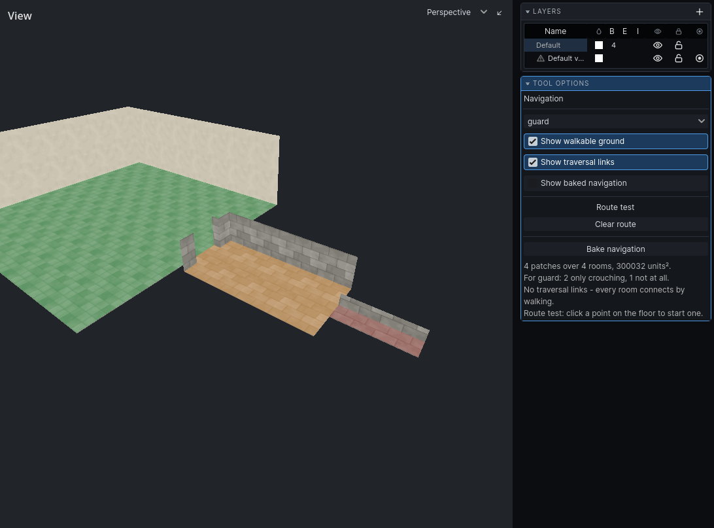
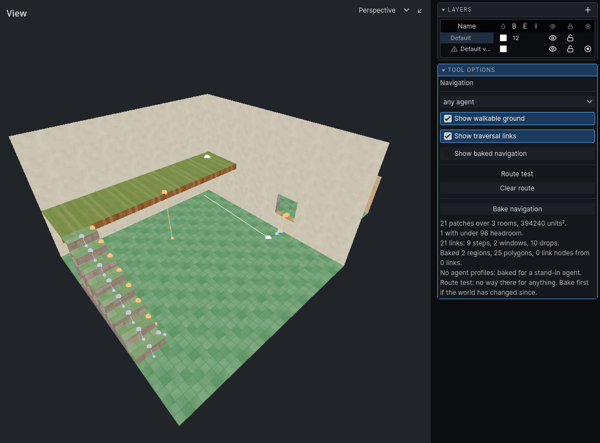

The Navigation tool
The Navigation tool shows the ground and links the level has, for one agent at a time, and tests routes between two points. There is nothing to author in it.
Click Navigation on the toolbar, or choose it from the Tools menu. Press Escape to leave it.
The panel
| Control | What it does |
|---|---|
| agent dropdown | The agent everything is shown for. Lists your game's agent profiles; any agent when the game has none. |
| Show walkable ground | Fills the ground in the 3D view and outlines it in the 2D views. |
| Show traversal links | Draws the links. See Links for the colours. |
| Show baked navigation | Godot's own navigation debug drawing: what was actually baked. |
| Clear route | Removes the test route. |
| Bake navigation | Bakes, the same way the game does when it loads the map. |
Under the buttons, a status report: patches of ground, rooms, area, how many patches the agent can use only crouching or not at all, links by kind, the route test, and warnings.
Reading the ground
The ground is re-read after every edit. For the chosen agent:
| Colour | Meaning |
|---|---|
| green | walks upright |
| amber | crouching only |
| red | cannot use: too low, too narrow, or too steep, or water it cannot swim |
With no agent profiles, amber means under 96 units of headroom, and nothing is red.
The fill is hidden by walls, like the rooms themselves.
Links are lines between their two ends. The end an agent leaves from has the larger marker, so a one-way drop reads at a glance.

Testing a route
- Pick an agent in the dropdown.
- Click Bake navigation.
- Click a point on the floor. That is the start.
- Click a second point. That is the destination.
The route the navigation server returns is drawn in white. The status line says whether the agent gets there. A third click starts a new route.
Changing the agent re-runs the route for the new one.
Note: The route test uses the last bake. After an edit, click Bake navigation again before trusting it.

The Room height overlay
The Cells dropdown in each 2D view has Room height. It colours each room on the 2D floorplan by its full height:
| Colour | Room height |
|---|---|
| red | under 64 |
| amber | 64 to 96 |
| green | 96 or more |
It is a quick map of a level's crawlspaces and halls, and it is the room's shape rather than the headroom a bake measures: it does not see beams, low ceilings over part of a room, or crates. It cannot — it is one colour per room, and the whole reason the bake measures headroom per patch of ground is that a low beam makes the answer different in one half of a room from the other. The Navigation tool shows the measured number.
When an area is unreachable
Pick the agent that should get there, bake, and test a route into the area. Then:
- The ground is red. Headroom, width, slope or water shuts this agent out. Raise the ceiling, widen the passage, or ease the slope.
- The ground is missing. Nothing there is ground: a floor steeper than 46°, a surface with no air above it, or a prop with no
nav_role. See Ground. - A doorway does not join. Check the floors on both sides are at the same height. A sill makes it a window. And check it is wider than the agent: a route keeps half a body from each jamb. See Ground.
- A link is drawn but not taken. The agent's profile refuses it: too high a climb, too far a fall, too wide a gap, or too small an opening. Your game's profiles decide this.
- There is no link. A ledge higher than the agent climbs needs a ladder: place a
nav_link. See Links. - The route used to work. Bake again; the route test uses the last bake.
The status report and the message log list warnings from each bake:
| Warning | What to do |
|---|---|
| N props have no nav_role, so navigation ignores them. | Mark the props that block or can be stood on. |
| Prop N is marked an obstacle but has no bounds, so it blocks nothing. | Check the prop's model. |
| Navigation link N goes nowhere. | Set its nav_link_target. |
| Navigation link N has an end outside any room. | Move the link, or its target, into air. |
| N of M patches fit no agent profile and were left out. | Expected for crawlspaces. Otherwise, see above. |
| No agent can take any of the links, so nothing crosses them. | Your game's profiles are stricter than the level. |
| No agent profiles: baked for a stand-in agent. | Your game has not given its profiles to the editor. |